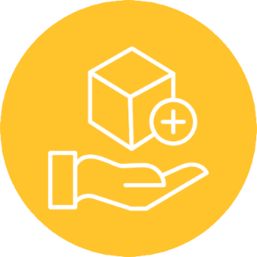
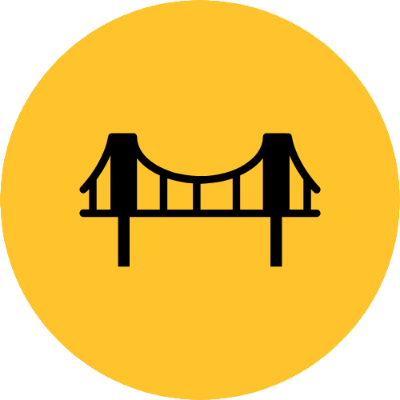
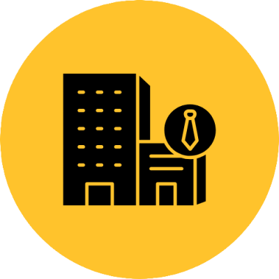
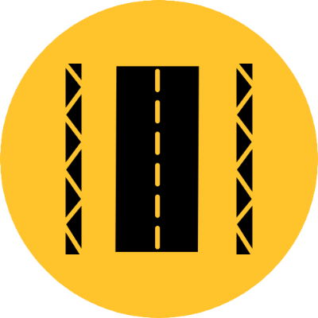
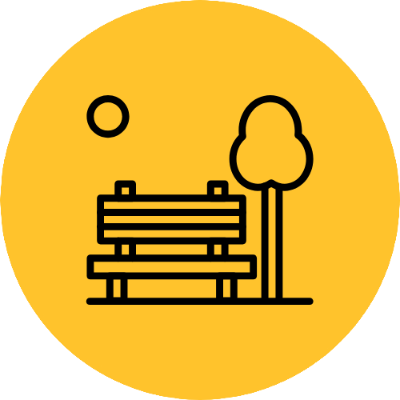
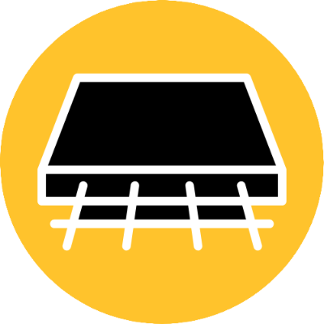

Home
Fábrica
Obras
Tecnologia
Contato
Home
Fábrica
Obras
Tecnologia
Contato

PRODUTOS E SERVIÇOS

PONTES
As Estruturas de nossas pontes desempenham um papel importante, conectando terras, cidades vizinhas, vales. Sendo feita de concreto, aço e misturas inovadores, impacta na durabilidade e na capacidade de suportar cargas. Além da concepção arquitetônica sendo essencial equilibrando a estética e funcionalidade.

EDIFICAÇÕES
A construção de edificações é feita de acordo com técnicas construtivas e normas técnicas vigentes. O código de obras orienta a construção de edifícios desde o planejamento até a conclusão, com o objetivo de criar cidades seguras, organizadas e esteticamente agradáveis.

VIADUTOS
Os viadutos são estruturas que servem para facilitar o tráfego e conectar diferentes regiões, sendo elementos essenciais da infraestrutura urbana. São formados por pontes feitas em concreto armado ou aço, interligadas em uma série de pequenas extensões múltiplas. A sua construção é feita através de diferentes processos, que passam por etapas como o projeto, o planejamento, o orçamento e a execução.
PASSARELAS
As passarelas representam um elo vital na rede urbana, facilitando a mobilidade e promovendo a segurança dos pedestres, são construídas em locais estratégicos, como em frente a escolas, hospitais, estações de metrô e trens. Para garantir a segurança, as passarelas são equipadas com grades de proteção, iluminação, sinalização e rampas de acesso.

MOBILIÁRIO URBANO
Desempenham um papel fundamental na criação de espaços públicos funcionais e esteticamente agradáveis. Além de dar segurança aos pedestres também enriquecem a experiencia urbana, tornando os espaços públicos mais convidativos.

FALE CONOSCO
GALERIAS
Nossas galerias possuem estrutura de concreto armado, proporcionando soluções eficientes para passagens em áreas urbanas densas ou em locais com restrições de espaço, podendo abrigar redes de serviços públicos como água e esgoto, garantindo estabilidade e segurança ao longo do tempo.